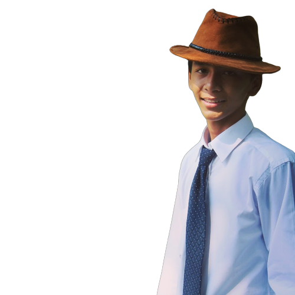

Saya gitaris dari sebuah band dan saya masih mahasiswa


Hai, Saya Satrio Ramadhan Wicaksono, saya seorang mahasiswa
jurusan teknik informatika di Politeknik Harapan Bersama Tegal. Usia
saya 20 tahun, saya asli Tegal dan tinggal di Kabupaten Tegal. Riwayat
Pendidikan saya, di
SMPN 1 Slawi,
SMKN 1 Adiwerna,
Poltek Harapan Bersama Tegal.
Saya memiliki skils dalam bidang musik, saya bisa bermain
gitar, dan bass.
Resume Pengalaman saya selama hidup masih minim, hanya
beberapa. Seperti saat SMP saya mengikuti lomba Marching Band
mendapat juara 3. Saat SMK saya ikut lomba Paskibra bersama pasukan
mendapat juara umum 2, dan terakhir saya mendapat juara karya tulis
ilmiah.
Tentang hal yang saya suka, saya bermain gitar, mendengarkan
musik, bepergian jauh dengan sepeda motor, dan saya suka mencari
spot alam yang tidak diketahui kebanyakan orang.
Tentang Goals saya, saya memiliki beberapa gaols yang harus
dicapai yaitu, saya harus sukses di masa muda, memiliki pekerjaan
yang saya sukai, menjelajah alam.
.png)
Saya baru menyelesaikan web yang saya buat sebagai tugas project, web tersebut bertema tentang kesehatan dan itu menjadi salah satu project saya.
Anda akan diarahkan menuju repository Github dari work samples ini

Saya memiliki pengalaman mendapat juara dalam lomba karya tulis ilmiah yang diadakan oleh Universitas Brawijaya.
.png)
Saya pernah meng-upload artikel di portal berita online pada semester 2, artikael yang saya upload membahas tentang konser coldplay yang diadakan di Jakarta
Anda akan diarahkan menuju portal berita artikel ini
ramadhansatrio123
Satrio Ramadhan W.
satrioramadhan